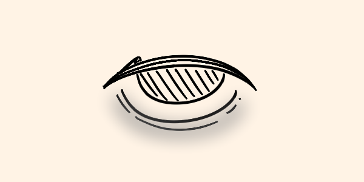

El 3 de julio de 1985, la fecha que marcaría el inicio de "La Gran Caída", Pelstrot fue señalado como el epicentro de un desastre sin precedentes. El parásito, que surgió sin aviso y comenzó a propagarse a una velocidad alarmante, transformó a las personas en criaturas irreconocibles y mortales. Con la situación descontrolada, países vecinos como Siloon, Jilson y otras naciones formaron la Unión de la Nueva Orden (UNO) para contener la amenaza y evitar que se extendiera más allá de las fronteras.
El gobierno de Pelstrot se enfrentaba a una crisis sin igual. En cuestión de semanas, el país pasó de ser una nación moderna y próspera a convertirse en un territorio de sombras, donde las reglas de la sociedad se desmoronaban a medida que el parásito se adueñaba de la población. Las ciudades más afectadas, especialmente en el norte, eran un espectáculo de desesperación y miedo. Los infectados se multiplicaban sin control, y los informes de ataques violentos aumentaban cada día.
En una conferencia de emergencia, la presidenta de Pelstrot, Veronia Claes, hizo un llamado a la cooperación internacional. "Este es un enemigo que no podemos combatir solos", declaró, con la voz temblorosa y la mirada agotada. "Hacemos un llamado a nuestros aliados y a la comunidad global. Necesitamos ayuda, necesitamos esperanza". Las palabras de Claes fueron la chispa que unió a varias naciones, cada una con sus propios temores, pero conscientes de que la amenaza no reconocía fronteras.
Ante la creciente crisis, Siloon y Jilson, junto con otros países de la región, respondieron al llamado. Surgió la Unión de la Nueva Orden (UNO), una alianza que buscaba coordinar esfuerzos para investigar el origen del parásito y salvar a quienes aún no habían sucumbido a la infección. Sin embargo, la creación de esta alianza no estuvo exenta de conflictos y debates internos.
“¿Podemos confiar en Pelstrot?”, preguntó uno de los delegados de Jilson durante la primera reunión de emergencia de la UNO. Las tensiones eran palpables, pues la posibilidad de que el parásito se extendiera más allá de Pelstrot generaba un clima de paranoia. Muchos miembros de la UNO sugirieron un bloqueo completo del país, una medida drástica que implicaría dejar a la población de Pelstrot a su suerte. Sin embargo, la presidenta Claes y otros diplomáticos apelaron a la humanidad y al compromiso global, evitando así un aislamiento total.
La UNO organizó rápidamente equipos de rescate especializados, compuestos por militares, científicos y médicos, quienes fueron enviados a las zonas más afectadas de Pelstrot. Su misión era doble: contener la infección y rescatar a aquellos que aún pudieran ser salvados. Estos equipos llevaban consigo laboratorios móviles, diseñados para recolectar muestras del parásito y analizarlas en tiempo real.
Las operaciones en el terreno, sin embargo, eran un caos. Los sobrevivientes se ocultaban en ruinas y edificios abandonados, temerosos tanto de los infectados como de los equipos de rescate, a quienes no siempre distinguían de posibles amenazas. En muchos casos, la desconfianza y el pánico resultaban en enfrentamientos que complicaban aún más las labores de rescate.
Los científicos de la UNO lograron obtener algunas muestras del parásito, pero la naturaleza de la criatura desafiaba la comprensión. Era evidente que se trataba de algo nunca visto, una forma de vida que no seguía las reglas de la biología convencional. Algunos comenzaron a sospechar que el parásito no era de este mundo, y surgieron teorías de conspiración que sólo alimentaron el miedo y la desconfianza.
El equipo de investigación de la UNO, dirigido por el doctor Elias Forester de Siloon, tuvo que enfrentar la realidad de que los métodos tradicionales de análisis no eran suficientes. En una declaración pública, Forester explicó que el parásito parecía mutar constantemente, adaptándose a cualquier intento de ataque. "No estamos tratando con un virus o una bacteria", afirmó. "Estamos ante algo que desafía todo lo que creíamos saber sobre la vida".
Mientras tanto, la presidenta Claes anunció un decreto de emergencia para proteger las ciudades aún no afectadas en Pelstrot. La medida incluía la creación de “zonas seguras”, áreas fortificadas donde los pocos ciudadanos no infectados podían encontrar refugio. Sin embargo, estas zonas se convertían rápidamente en focos de desesperación, pues los suministros eran escasos y la seguridad, difícil de garantizar.
A medida que la situación empeoraba, la ONU y la comunidad internacional empezaron a cuestionar la veracidad de los informes provenientes de Pelstrot. La teoría de que el parásito podría haber sido resultado de un experimento secreto en Pelstrot comenzó a ganar tracción, lo que debilitó la cooperación internacional. En respuesta, la presidenta Claes permitió que un equipo independiente de la UNO ingresara al país para investigar, pero el acceso fue limitado debido al peligro inminente.
Los informes contradictorios alimentaban la especulación. Por un lado, se aseguraba que el gobierno de Pelstrot estaba haciendo todo lo posible para contener la plaga, pero otros documentos sugieren que los esfuerzos estaban plagados de errores y descoordinación. Las críticas se intensificaron cuando la UNO perdió contacto con uno de sus equipos en la ciudad de Verkland, donde se cree que el parásito surgió por primera vez.
A pesar de los conflictos y la incertidumbre, la Unión de la Nueva Orden decidió seguir adelante. La creación de un laboratorio central en la frontera entre Siloon y Pelstrot fue la apuesta más grande de la alianza. Desde allí, se realizarían análisis exhaustivos en busca de una cura o, al menos, una forma de detener la expansión del parásito.
La humanidad se encontraba en un punto de inflexión. A ojos del gobierno de Pelstrot y la Unión de la Nueva Orden, la lucha contra el parásito era la prioridad número uno, pero con cada día que pasaba, la esperanza parecía desvanecerse un poco más. Mientras tanto, el parásito continuaba extendiendo sus raíces, envolviendo en sombras no solo a Pelstrot, sino al resto del mundo.
